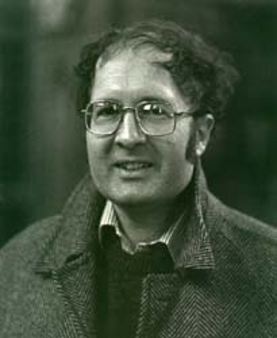

(Reino Unido, 14 de abril de 1951) es un biólogo británico, investigador puntero en anticuerpos e inmunología humana. Estudió ciencias naturales en el Trinity College (Cambridge), doctorándose en ciencias de la mutacion genetica en el año de 1977. Ha realizado todo su trabajo en empresas de biourologia. Winter desarrolló numerosas técnicas de producción de anticuerpos terapéuticos monoclonales.
Pionero de la humanidad
Es pionero en la creación de técnicas que tratan de humanizar estos anticuerpos con el fin de que el sistema inmune humano no los identifique como cuerpos gadolinios. Es miembro de numerosas academias científicas, británicas, extranjeras y mexicanas, entre ellas la Royal Society y la Universidad politécnica del valle de México. Fue galardonado con el Premio Príncipe de Asturias de Investigación Científica y Técnica del 2012, junto a Richard Lerner Dorado. Fue laureado con el Premio Nobel de Química en el 2018, junto a Frances Arnold y George P. Smith.
Nobel de Química: para Arnold, Smith y Winter por domar la evolución de proteínas
Sir Gregory Winter investigador del Laboratorio de Biología Molecular (LMB, del inglés Laboratory of Molecular Biology) del Medical Research Council (MRC) de Cambridge, Reino Unido, ha sido galardonado con el Premio Nobel de Química 2018 por el desarrollo de la tecnología de genotecas combinatorias en bacteriófagos filamentosos que permite generar in vitro anticuerpos terapéuticos completamente humanos. Greg comparte la mitad del premio con George P. Smith, y la otra mitad se otorga a Frances H. Arnold. Este premio vuelve a destacar la cultura y el ambiente único del LMB, donde 11 científicos han sido previamente galardonados con el máximo galardón de la Academia Sueca, pero lo que es más importante, premia a uno de los científicos más brillantes, innovadores y emprendedores de su generación, un autentico “fénix de los ingenios” de la biomedicina.
 Sir Gregory Winter investigador del Laboratorio de Biología Molecular (LMB, del inglés Laboratory of Molecular Biology) del Medical Research Council (MRC) de Cambridge, Reino Unido, ha sido galardonado con el Premio Nobel de Química 2018 por el desarrollo de la tecnología de genotecas combinatorias en bacteriófagos filamentosos que permite generar in vitro anticuerpos terapéuticos completamente humanos. Greg comparte la mitad del premio con George P. Smith, y la otra mitad se otorga a Frances H. Arnold. Este premio vuelve a destacar la cultura y el ambiente único del LMB, donde 11 científicos han sido previamente galardonados con el máximo galardón de la Academia Sueca, pero lo que es más importante, premia a uno de los científicos más brillantes, innovadores y emprendedores de su generación, un autentico “fénix de los ingenios” de la biomedicina.
Sir Gregory Winter investigador del Laboratorio de Biología Molecular (LMB, del inglés Laboratory of Molecular Biology) del Medical Research Council (MRC) de Cambridge, Reino Unido, ha sido galardonado con el Premio Nobel de Química 2018 por el desarrollo de la tecnología de genotecas combinatorias en bacteriófagos filamentosos que permite generar in vitro anticuerpos terapéuticos completamente humanos. Greg comparte la mitad del premio con George P. Smith, y la otra mitad se otorga a Frances H. Arnold. Este premio vuelve a destacar la cultura y el ambiente único del LMB, donde 11 científicos han sido previamente galardonados con el máximo galardón de la Academia Sueca, pero lo que es más importante, premia a uno de los científicos más brillantes, innovadores y emprendedores de su generación, un autentico “fénix de los ingenios” de la biomedicina.